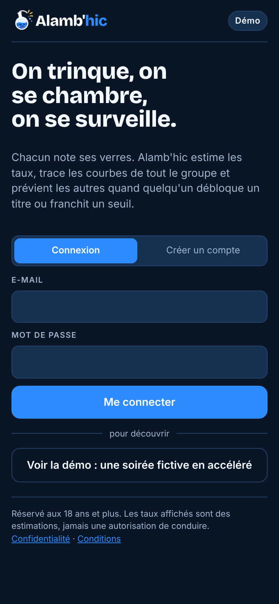
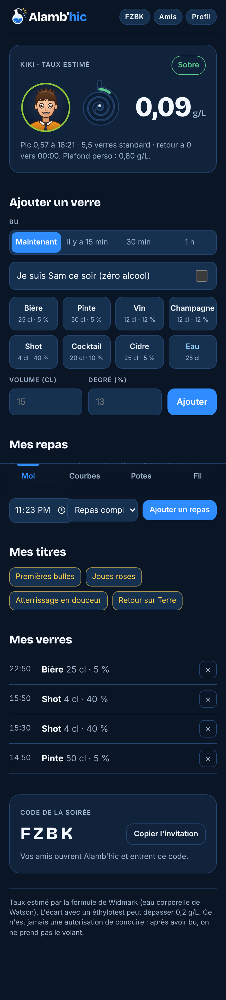
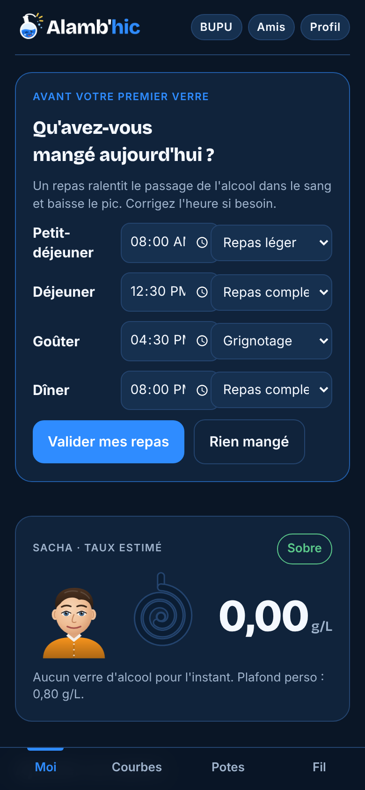
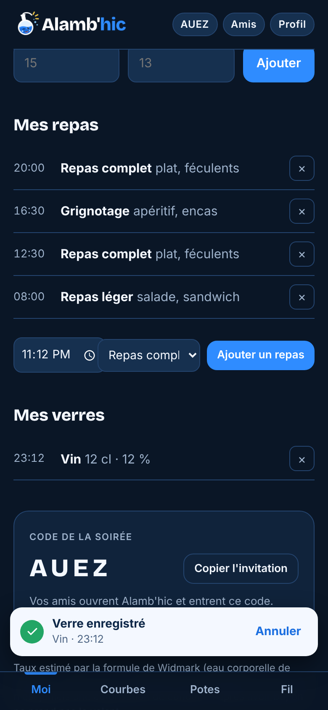
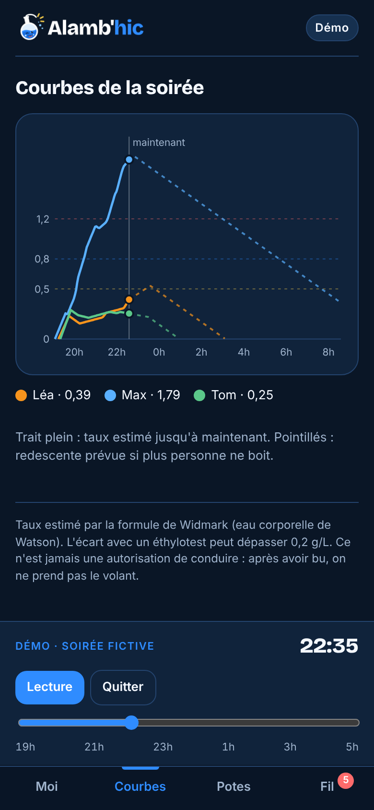
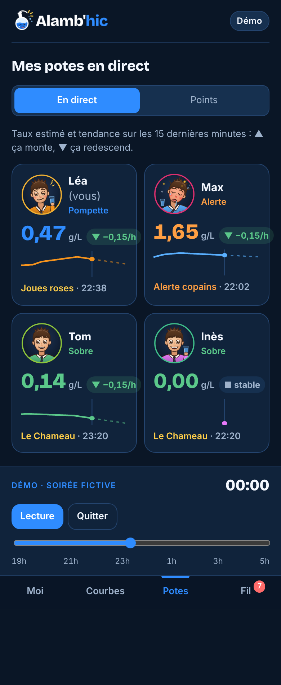
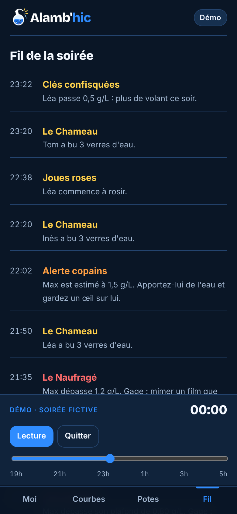
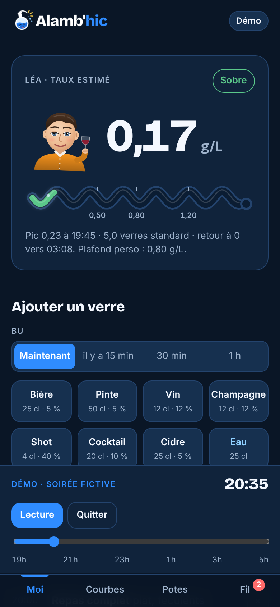
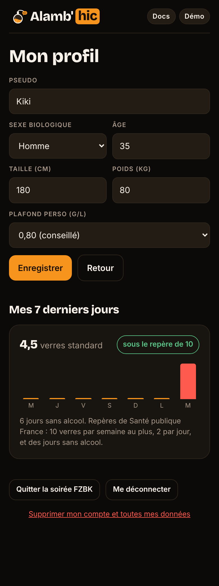

Présentation et guides Mis à jour le 10 novembre 2026
Mode d'emploi de toutes les fonctions de Youdrink, rangé par sujet.
1Démarrer
2Les soirées
3Noter ses verres
4Les repas
5Le taux estimé
6Courbes, classement et fil
7Titres, points et gages
8Notifications
9L'avatar
10Le mode démo
11Suivi des 7 derniers jours
12Fiabilité et anti-triche
13Compte et données
14Administration
AHistorique des versions
1Démarrer
Créer un compte
Ouvrez youdrink.onrender.com, choisissez « Créer un compte », saisissez votre e-mail et un mot de passe d'au moins 8 caractères. La connexion reste active 60 jours sur l'appareil. La connexion Google arrivera quand l'identifiant sera configuré.
Compléter son profil
Pseudo, sexe biologique, âge, taille et poids : ces mesures servent uniquement à estimer votre taux. Les autres joueurs voient votre pseudo, vos verres et vos taux, jamais vos mesures.
Youdrink est réservé aux 18 ans et plus : un âge inférieur est refusé.
Choisir son plafond
0,5 ; 0,6 ; 0,8 (conseillé) ou 1,0 g/L. Au-delà, les titres positifs s'arrêtent et chaque excès devient un titre de honte avec gage.
Installer l'appli
Dans le navigateur du téléphone : menu → « Ajouter à l'écran d'accueil ». Youdrink s'ouvre alors en plein écran avec son icône.
Sur l'offre gratuite de Render, le serveur s'endort après 15 minutes sans visite : la première ouverture prend alors 30 à 50 secondes.

Écran d'accueil
2Les soirées
Créer une soirée
Sur l'écran d'accueil, « Créer une soirée » génère un code de 4 lettres (sans I, L ni O pour éviter les confusions). Il s'affiche en haut de l'écran et dans la carte « Code de la soirée ».
Inviter
« Copier l'invitation » ouvre le partage du téléphone, ou copie le message « Rejoins ma soirée Youdrink avec le code … » à coller dans le groupe.
Rejoindre
Saisissez le code dans « Rejoindre avec un code ». Rejoindre une soirée vous fait quitter automatiquement la précédente : on ne joue qu'à une soirée à la fois.
Quitter
Profil → « Quitter la soirée ». Vos verres restent comptés dans votre suivi personnel.
Temps réel
Chaque verre ajouté, chaque titre et chaque seuil est diffusé immédiatement à tous les joueurs. Le serveur renvoie aussi l'état de la soirée chaque minute, pour que les taux et les titres de redescente avancent même quand personne ne boit.
3Noter ses verres
Boisson
Volume
Degré
Bière
25 cl
5 %
Pinte
50 cl
5 %
Vin
12 cl
12 %
Champagne
12 cl
12 %
Shot
4 cl
40 %
Cocktail
20 cl
10 %
Cidre
25 cl
5 %
Eau
25 cl
0 %
Verre perso : indiquez le volume en cl et le degré, puis « Ajouter ». Un degré de 0 compte comme une boisson sans alcool.
Bu plus tôt : « il y a 15 min », « 30 min » ou « 1 h » avant de toucher la boisson. Un verre peut être noté jusqu'à 3 h après coup.
Sam : « Je suis Sam ce soir » limite vos boissons à l'eau et aux boissons sans alcool, et vous donne le titre « Sam de la soirée ». Impossible si vous avez déjà bu de l'alcool dans la soirée.
Supprimer un verre : la croix à droite, pendant 3 h. Chaque suppression apparaît dans le fil de la soirée.

Écran Moi
4Les repas

Avant le premier verre

Mes repas en cours de soirée
Un repas ralentit le passage de l'alcool dans le sang et baisse le pic : Youdrink tient compte de vos repas pour chaque verre bu de 30 minutes avant le repas jusqu'à la fin de son effet.
Type de repas
Exemples
Absorption
Effet pendant
Alcool qui passe
À jeun
—
30 min
—
100 %
Grignotage
apéritif, encas
45 min
1 h 30
95 %
Repas léger
salade, sandwich
60 min
2 h 30
90 %
Repas complet
plat, féculents
75 min
4 h
85 %
Repas copieux
repas de fête
90 min
5 h
80 %
Avant le premier verre
En entrant dans une soirée, une carte « Qu'avez-vous mangé aujourd'hui ? » propose les repas déjà passés de la journée (petit-déjeuner 8 h, déjeuner 12 h 30, goûter 16 h 30, dîner 20 h) : corrigez l'heure et le type, ou choisissez « Rien ». « Valider mes repas » ou « Rien mangé » débloque les boissons alcoolisées ; l'eau reste toujours disponible.
Ajouter un repas en cours de soirée
Section « Mes repas » de l'écran Moi : heure, type, « Ajouter un repas ». La croix supprime un repas noté par erreur. Les repas des dernières 24 h sont pris en compte, dans toutes vos soirées.
La question à l'heure des repas
Entre 12 h et 15 h, 16 h et 18 h, puis 19 h et 22 h 30, si aucun repas n'est noté, Youdrink demande « Avez-vous déjeuné ? », « Avez-vous mangé quelque chose ? » ou « Avez-vous dîné ? ». Un bouton par type de repas l'enregistre à l'heure actuelle ; « Pas encore » repose la question 45 minutes plus tard, « Je ne mangerai pas » la fait taire jusqu'au repas suivant.
5Le taux estimé
Youdrink estime votre taux minute par minute avec la formule de Widmark et l'eau corporelle de Watson :
Alcool d'un verre : volume × degré × 0,789 g/ml (10 g = un verre standard).
Eau corporelle : selon le sexe, l'âge, la taille et le poids.
Absorption progressive sur 30 min à jeun, jusqu'à 90 min après un repas copieux, avec une part d'alcool réduite (voir « Les repas »).
Élimination : 0,15 g/L par heure.
État affiché
Taux estimé
Sobre
moins de 0,2 g/L
Pompette
0,2 à 0,5 g/L
Interdit de conduire
à partir de 0,5 g/L
Au-dessus du plafond
à partir de votre plafond
Alerte
à partir de 1,5 g/L
L'écran Moi montre aussi le pic de la soirée, le nombre de verres standard et l'heure estimée du retour à 0.
Une estimation, jamais une autorisation de conduire. L'écart avec un éthylotest peut dépasser 0,2 g/L. Après avoir bu, on ne prend pas le volant.
6Courbes, classement et fil

Courbes de la soirée

Classement

Fil de la soirée
Courbes : une couleur par joueur, seuils 0,5 / 0,8 / 1,2 en pointillés, trait plein jusqu'à maintenant et pointillés pour la redescente prévue.
Classement : trié par points, avec l'avatar, le taux actuel, le pic et les titres de chacun.
Fil : tous les titres, alertes et suppressions de verres, du plus récent au plus ancien. La pastille rouge sur l'onglet compte les nouveautés non lues.
7Titres, points et gages
Titre
Condition
Points
Premières bulles
0,2 g/L
+10
Joues roses
0,4 g/L
+10
Clés confisquées
0,5 g/L (information)
0
Philosophe de comptoir
0,8 g/L, dernier titre à gagner en montant
+10
Hors plafond
dépasser son plafond perso (s'il est sous 1,2)
−15 + gage
Le Naufragé
1,2 g/L
−15 + gage
La Fusée
+0,5 g/L en une heure
−15 + gage
Alerte copains
1,5 g/L : les amis sont appelés à aider
0
Alerte rouge
2 g/L : rester avec la personne, 15 en cas de signes graves
0
Atterrissage en douceur
redescendre sous 0,2 après avoir dépassé 0,4
+10
Retour sur Terre
revenir à 0 après avoir dépassé 0,2
+10
Le Chameau / L'Oasis
3 / 6 verres d'eau
+10 chacun
Sam de la soirée
jouer Sam
+10
Gages : tirés parmi huit, toujours sans alcool (deux grands verres d'eau, un compliment à chaque joueur, imiter un animal, parler avec un accent, servir de l'eau à la tablée, raconter sa pire honte, chanter un refrain, mimer un film).
8Notifications
Chaque titre et chaque seuil apparaît en bandeau sur tous les téléphones de la soirée (trois au plus à la fois, un toucher les ferme), avec une vibration ; les alertes vibrent deux fois et restent 15 secondes.
Titres : message moqueur.
Honte : gage et passage à l'eau.
1,5 g/L : « apportez-lui de l'eau et gardez un œil sur lui ».
2 g/L : rester avec la personne ; si elle vomit, ne répond plus ou respire mal, appeler le 15.
Aujourd'hui, les notifications arrivent quand l'appli est ouverte. Les notifications appli fermée viendront avec l'APK (étape 2).

Notifications pendant la démo
9L'avatar
0 g/L
0,3
0,6
0,9
1,2
1,7
Chaque joueur a un avatar à sa couleur, sur l'écran Moi et dans le classement. Il évolue en continu :
rougeurs et nez rouge qui augmentent, paupières qui tombent, blanc des yeux qui rougit, tête qui penche ;
sourire qui s'élargit jusqu'au plafond, puis grimace ;
0,5 g/L : col ouvert et clés de voiture barrées ; 0,6 g/L : bulles de hoquet ; 0,8 g/L : lunettes de travers ;
au-dessus du plafond : teint verdâtre, yeux qui louchent, cheveux en bataille, chemise froissée ; 1 g/L : goutte de sueur ;
1,5 g/L : allongé sur un oreiller avec un verre d'eau.
Pendant 25 minutes après chaque verre, l'avatar tient le bon modèle (bière avec mousse, vin rouge, flûte, shot, cocktail ou eau). Quand le taux redescend, il tient un verre d'eau.
10Le mode démo
Le bouton « Démo » en haut de l'écran lance une soirée fictive, même sans compte : Léa (raisonnable, c'est vous), Max (qui dérape), Tom (modéré) et Inès (Sam).
Curseur : avancez ou reculez de 19 h à 6 h ; les titres déjà passés ne sont pas renotifiés.
Lecture : la soirée défile en accéléré, 5 minutes toutes les demi-secondes.
On peut ajouter ou supprimer des verres pour Léa : rien n'est enregistré.
Quitter revient à votre vraie soirée.
11Suivi des 7 derniers jours
La page Profil compte vos verres standard des 7 derniers jours, toutes soirées confondues, et les compare aux repères de Santé publique France : 10 verres par semaine au plus, 2 par jour, et des jours sans alcool.
Les barres passent en rouge au-delà de 2 verres standard dans la journée ; le nombre de jours sans alcool est indiqué.
À venir (étape 4) : bilan mensuel, objectifs perso, trophées long terme, défis entre amis.

Profil et suivi
12Fiabilité et anti-triche
Le classement récompense la modération : la triche consisterait surtout à sous-déclarer. Règles en place :
taux, titres et points calculés par le serveur, identiques pour tous ;
un verre ne peut pas être antidaté de plus de 3 h ;
un verre ne peut être supprimé que pendant 3 h, et la suppression apparaît dans le fil ;
6 verres d'alcool au plus en 10 minutes ;
Sam ne peut noter que des boissons sans alcool, et ne peut pas devenir Sam après avoir bu.
À venir (étape 3) : éthylotest Bluetooth et recalibrage personnel, validation des verres par les amis, photo du verre, indice de fiabilité ; puis gorgées détectées par la montre (étape 4).
13Compte et données
Se déconnecter : Profil → « Me déconnecter ».
Supprimer son compte : Profil → « Supprimer mon compte et toutes mes données », puis confirmer. Profil, verres et titres sont effacés définitivement.
Données gardées : e-mail, mot de passe chiffré, profil, verres, repas, titres. Hébergement Render à Francfort (Union européenne).
Consentement : à la création du compte, une case à cocher confirme l'âge (18 ans et plus) et l'accord pour le traitement des consommations, qui sont des données de santé. Avec Google, la même mention s'affiche sous le bouton.
Pages publiques : /confidentialite (données, sous-traitants, durée, droits, CNIL) et /conditions (un jeu et pas une mesure, 18 ans, modération, responsabilité), liées depuis l'écran de connexion. L'adresse de contact vient de la variable Render CONTACT_EMAIL.
14Administration
Comptes admin : variable Render ADMIN_EMAILS (adresses séparées par des virgules). Un admin voit le bouton « Docs » en haut de l'écran.
Documentation : PDF du dossier docs/ listés dans docs/index.json (titre, description, date, catégorie), accessibles aux seuls admins. Sources dans docs-src/, régénérées par docs-src/build.sh.
Déploiement : chaque envoi sur la branche main de Kiki78test/Youdrink redéploie le service Render.
Variables : DATABASE_URL et SESSION_SECRET (automatiques), GOOGLE_CLIENT_ID (facultatif), ADMIN_EMAILS.
AHistorique des versions
Date
Version
Contenu
10/11/2026
0.4
Pages publiques « Politique de confidentialité » et « Conditions d'utilisation » ; consentement explicite à la création du compte ; connexion Google active.
10/11/2026
0.3
Repas : saisie des repas du jour avant le premier verre, ajout d'un repas à tout moment, question « avez-vous mangé ? » aux heures des repas ; le type de repas module l'absorption et le pic.
Socle web en ligne sur Render : comptes, soirées par code en temps réel, calcul serveur des taux et des titres, avatar, mode démo, suivi 7 jours, appli installable, premières règles anti-triche.
09/11/2026
proto
Prototype jouable : calcul Widmark, titres et gages, courbes communes, notifications, avatar évolutif, mode démo avec curseur temporel ; cahier des charges.